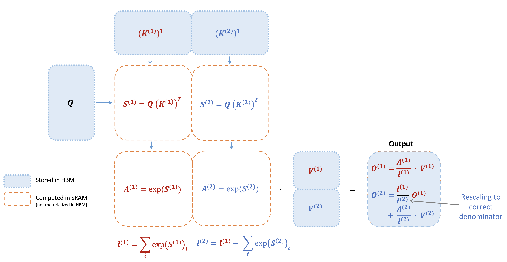
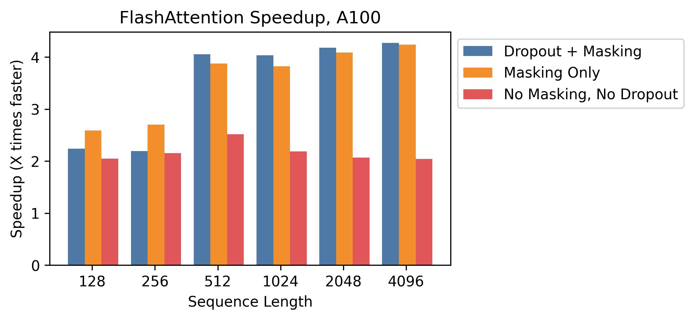
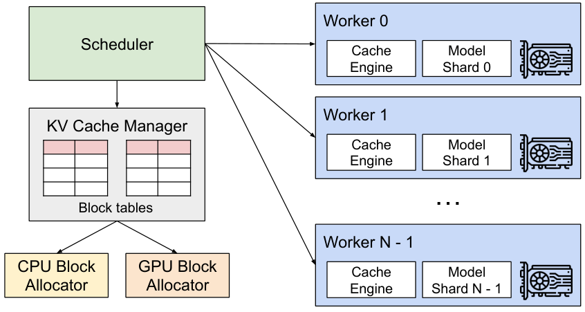

第 8 章 GPU 架构与训练系统
💡 本章导读
多模态是所有大模型方向里"最吃系统"的一个：视觉 token 数量比文本多一个数量级、训练要同时喂图文对、推理要处理动态分辨率。不理解 GPU 与训练系统，你在第 35 章（多模态预训练）就会第一次撞墙——显存不够、GPU 利用率上不去、通信把速度拖垮。本章的目标是给你一套诊断语言：算力受限还是访存受限？瓶颈在计算、在显存带宽还是在通信？读完你能读懂训练日志里的 MFU、能估算一个模型的显存占用、能判断该上 ZeRO-2 还是 ZeRO-3，并理解 vLLM 为什么是推理服务的操作系统级发明。
1.GPU 为什么快：从晶体管到 Tensor Core
1.1 吞吐的来源：并行而非魔法
神经网络的主体运算是矩阵乘法（GEMM），其特点是海量独立乘加、对控制流要求低——与 GPU 的设计哲学完全同构。一块现代 GPU 含上百个流式多处理器（SM，Streaming Multiprocessor），每个 SM 内含数十个计算核心与专门的矩阵计算单元。以 H100 为例：132 个 SM、16896 个 FP32 核心，配合稀疏化的第四代 Tensor Core 可达 ~1000 TFLOPS（BF16 稠密约 990 TFLOPS）。对比 CPU：单核性能高但核心少（几十），面对 4096×4096 的矩阵乘，GPU 用"一万个工人同时搬砖"碾压"十个工人搬得快"。
1.2 Tensor Core：矩阵乘的专用车道
Tensor Core 是 GPU 中的"矩阵积木块"：一个指令完成 $4\times4$（或 $8\times8$、$16\times8$，随代际变化）的小矩阵乘加。它的意义不只是快，还有精度：从 Volta 的 FP16 累积 FP32，到 Ampere 支持 BF16（指数位与 FP32 相同，训练时不需要 loss scaling），再到 Hopper 的 FP8（E4M3/E5M2 两种格式）与 Transformer Engine（动态在 FP8/FP16 间切换）。到 Blackwell（B200），FP4 进入了推理视野。实践含义：训练用什么精度不是"哲学问题"而是"硬件代际问题"——A100 时代 BF16 是甜点，H100 时代 FP8 训练已成熟（FlashAttention-3 也为 Hopper 的 FP8 专门设计）。
| GPU | 代际 | 显存 | 显存带宽 | BF16 算力 | 互联 | 多模态语境的意义 |
|---|---|---|---|---|---|---|
| V100 | Volta | 16/32 GB HBM2 | ~900 GB/s | ~125 TFLOPS | NVLink 2.0 | 历史基线 |
| A100 | Ampere | 40/80 GB HBM2e | 1.6–2.0 TB/s | ~312 TFLOPS | NVLink 3.0 600GB/s | 7B–13B 训练主力（2021–23） |
| H100 | Hopper | 80 GB HBM3 | 3.35 TB/s | ~990 TFLOPS | NVLink 4.0 900GB/s | FP8 训练；百亿级多模态主力 |
| H200 | Hopper | 141 GB HBM3e | 4.8 TB/s | ~990 TFLOPS | NVLink 4.0 | 大 KV Cache 推理友好 |
| B200 | Blackwell | 192 GB HBM3e | ~8 TB/s | ~2.25 PFLOPS | NVLink 5.0 | FP8/FP4；万亿多模态训练 |
💡 技巧：读硬件规格的三步法
拿到一块新卡：①先看显存容量（决定你能不能跑，单卡装不装得下一个 7B 全参训练 = 权重14GB+优化器42GB）；②再看带宽/算力比（A100 ≈ 6.4 GB/s per TFLOPS，H100 ≈ 3.4 —— Hopper 算力涨 3 倍带宽只涨 2 倍，意味着访存受限算子的相对成本更高，这正是 FA3 要重写 tiling 的原因）；③最后看互联（单机多卡看 NVLink，跨机看 IB——决定了并行策略的选择空间）。
1.3 拓扑视角：一块 GPU 长在什么环境里
单卡规格只是故事的一半，实际性能取决于卡在机器里的位置。一台典型的 8×H100 服务器：8 张卡经 NVLink 全互联（每对卡 900GB/s），CPU 侧通过 PCIe 连接网卡（8×400Gb/s IB）与存储；跨节点则依赖 IB 交换网络，Rail-optimized 拓扑保证"同序号卡走同一条 rail"。这些拓扑细节直接决定分布式软件的行为：NCCL 会探测并选择 NVLink 路径做机内集合通信、IB 做跨机；而多模态数据加载常常是"网络被最先打满"的地方——图像数据从对象存储拉取的带宽（几十 GB/s 级）可能低于 GPU 消费速度，所以大规模多模态训练的存储层（本地 NVMe 缓存、webdataset 分片、随机打乱的分片顺序）是和 GPU 同级重要的基础设施。配置多机训练时的健康检查清单：IB 端口速率（ibstat）、NCCL 拓扑识别（NCCL_DEBUG=INFO 中的 NVLink/IB 树）、GPU 间带宽实测（nccl-tests 的 all_reduce 基准）——三项正常再开训练，能省下几天的困惑。
2.内存层级与 Roofline 模型
2.1 金字塔：寄存器 → 共享内存 → L2 → HBM
GPU 显存是一个速度差三个数量级的金字塔：寄存器（~0.1 ns，每线程私有）、共享内存/L1（~10 ns，SM 内共享，H100 每 SM 228KB）、L2（~100 ns，全卡共享，H100 50MB）、HBM 显存（~1000 ns 级延迟，但带宽 TB/s 级）。优化的本质只有一句话：让数据在被计算前尽量靠近计算单元，并且每次从下层搬数据时"满载"（coalesced 访问）。FlashAttention（第 4 章）的全部巧妙就浓缩成一句：用共享内存做 tile，让 HBM 的往返次数从 $O(N^2)$ 降到 $O(N)$。
2.2 Roofline：一图判断瓶颈
以算术强度 $I$（每读一byte数据能做几次浮点运算）为横轴、算力为纵轴画图，屋顶线由此得名：$I < P_{\mathrm{peak}}/BW$ 时是访存受限（memory-bound），性能由带宽封顶；$I$ 更大则是算力受限（compute-bound）。给几个锚点（BF16、H100 量级）：$P_{\mathrm{peak}}/BW \approx 990/3350 \approx 0.30$ FLOP/byte。一个大矩阵乘（$4096^3$，$I\approx 2N/(4N+...)\approx 256$ FLOP/byte）远超屋顶拐点——算力受限，适合 GPU；而一个小矩阵乘或逐元素激活（$I\approx 1$）严重访存受限——这就是为什么"很多小算子"比"一个大算子"慢得多，也是 kernel 融合（fusing）存在的理由。
有了 Roofline，优化动作就有了统一语法：把点往右上推。具体到 Transformer 训练的三类算子：大 GEMM（QKV/FFN）已在算力受限区，优化方向是提高 Tensor Core 利用率（合适的 tile 尺寸、FP8）；逐元素与归一化算子在访存区底部，优化方向是融合（一个 kernel 内做完，少读写 HBM）；注意力在朴素实现下是"访存区的深渊"（$I$ 随 $N^2$ 矩阵的读写被稀释），FlashAttention 的价值正在于此。还有一类常被忽视的成本是碎片化：一个训练 step 往往由上百个小 kernel 组成，每个 kernel 的启动开销（~10μs）与 kernel 间的 GPU 空转累积起来，在小 batch/小模型场景可占 30%+ 的时间——CUDA Graph 与 torch.compile 的 mode="reduce-overhead" 就是为此而生。多模态的视觉塔恰是"中算子、多分支、动态 shape"的重灾区，编译期融合与静态 shape 重建（pad 到固定分辨率桶）往往能白捡 20% 吞吐。
3.注意力是访存受限的：用 Roofline 重读 FlashAttention
有了 Roofline，FlashAttention（第 4 章）就不再是一堆实现技巧，而是模型的必然。朴素自注意力需要三段 HBM 往返：读出 $N\times N$ 的注意力矩阵 $S$、写出它、再读回来做 softmax 与加权——$S$ 本身就是 $O(N^2)$ 的显存与带宽开销。序列长 32K 时，单头的 $S$ 就有 $32\mathrm{K}^2\approx 10^9$ 个元素。FlashAttention 的 tiling 方案把 Q 分块驻留 SRAM、对 K/V 流式扫描，HBM 往返降到 $O(N)$ 量级，从而把"屋顶下方很远"的朴素实现拉到接近算力上限。对多模态的直接推论：视觉 token 越多，FlashAttention 的相对收益越大——一张高分辨率图的注意力矩阵是 512×512 图像的数百倍，没有 FA/FlashAttention 类算子，高分辨率 VLM（第 22 章）在工程上根本不可行。


📐 理论推导：显存占用公式（训练必备）
混合精度（BF16 权重 + FP32 主权重）+ AdamW 的训练显存（参数量 $N$）：
即常说的"16 字节/参数"法则：7B 模型全参训练仅模型状态就要 $7\times10^9\times16 \approx 112$ GB——单卡 80GB 根本装不下，这就是 ZeRO（第 6 节）与 LoRA（第 36 章）存在的理由。激活显存与序列长度成正比：每层约 $s\cdot h\cdot(34 + 5\cdot a\cdot s/h)$ 字节量级（Korthikanti et al., arXiv:2205.05198 的经典估计），注意力项的 $s^2$ 部分在使用 FlashAttention 后被消除。多模态直接代入：一张图 576 视觉 token（336px/14px 平方）≈ 576 个"文本 token"的激活，十几张高分辨率图就能顶一整段长文本——再次强调视觉 token 预算意识。
4.通信：NVLink、InfiniBand 与集合通信
多卡训练的隐藏成本在卡间通信。层级结构：卡内（SM 间共享内存，最高速）→ 节点内（NVLink 直连，H100 达 900 GB/s 单向；PCIe 5.0 仅 ~64 GB/s）→ 节点间（InfiniBand NDR 400 Gb/s 或以太网 RoCE）。分布式算法设计的第一原则：让通信发生在最快的那一层——这就是张量并行放节点内、数据并行放节点间的原因。常用集合通信（collective）：all-reduce（梯度求和，DP 的核心）、all-gather（ZeRO-3 前向时拼回完整参数）、reduce-scatter（ZeRO-1/2 分片梯度）、all-to-all（专家并行 MoE 路由）。NCCL 是这些操作在 NVIDIA GPU 上的工业实现，它能自动选择 ring/tree 算法与 NVLink/IB 路径——你只需保证拓扑配置正确（NCCL_DEBUG=INFO 排查）。
有了通信量的数学（6C.1 节），"重叠"就有了明确的判断标准：当单桶通信时间 < 该桶对应的计算时间时，通信可以完全被隐藏。DDP 的 bucket 大小默认 25MB，太小会导致通信次数暴增（每次都有固定延迟）、太大则首桶计算不足以掩盖通信——多模态训练里因为视觉塔梯度形状特殊（大而少），值得显式调整 bucket_cap_mb 并用 nsys 验证重叠效果。另一个高频坑是跨机带宽的"一半定律"：机间带宽通常只有机内的 1/5–1/20，任何把 all-reduce 放在跨机路径上的设计（如错误地把 TP 配成跨机）都会让吞吐崩塌，检查 NCCL 拓扑日志是部署日的第一件事。
| 原语 | 语义 | 通信量（每卡） | 典型用途 |
|---|---|---|---|
| all-reduce | 各卡张量求和后各自持有结果 | ~2×张量大小（ring） | DDP 梯度同步 |
| reduce-scatter | 求和 + 按卡切分 | ~1×张量 | ZeRO-1/2 梯度分片 |
| all-gather | 各卡分片拼成全量 | ~1×张量 | ZeRO-3/FSDP 参数重建 |
| all-to-all | 按目标重新分发的交换 | ~1×张量 | MoE 专家路由、序列并行换轴 |
| broadcast | 一卡复制到全体 | ~1×张量 | 权重下发、配置同步 |
5.数据并行与 DDP：最小可用的分布式训练
数据并行（DP）是最朴素的并行：每卡持有完整模型，切分数据，各自前反向后同步梯度。PyTorch 的 DistributedDataParallel（DDP）做了两个关键优化：①梯度桶（bucketing）——把参数分桶，反向传播到哪个桶就立刻对该桶做 all-reduce，与后续层的计算重叠；②按参数反传顺序重排桶，保证通信与计算的最大重叠。DDP 的隐含假设是每卡装得下完整模型与优化器状态——7B 模型（16 字节/参数 ≈ 112GB）单卡装不下时，必须进入 ZeRO 的世界。
# DDP 标准骨架（单机 8 卡：torchrun --nproc_per_node=8 train.py）
import os, torch, torch.distributed as dist
from torch.nn.parallel import DistributedDataParallel as DDP
from torch.utils.data import DataLoader, DistributedSampler
def main():
dist.init_process_group("nccl") # 初始化进程组
local_rank = int(os.environ["LOCAL_RANK"])
torch.cuda.set_device(local_rank)
model = build_model().cuda()
model = DDP(model, device_ids=[local_rank])
sampler = DistributedSampler(train_ds) # 关键：按 rank 切分数据
loader = DataLoader(train_ds, batch_size=32,
sampler=sampler, num_workers=4, pin_memory=True)
opt = torch.optim.AdamW(model.parameters(), lr=3e-4)
for epoch in range(epochs):
sampler.set_epoch(epoch) # 保证每 epoch 洗牌不同
for imgs, texts in loader:
loss = model(imgs.cuda(), texts)
loss.backward() # 反向时 DDP 自动分桶 all-reduce
opt.step(); opt.zero_grad()
dist.destroy_process_group()
if __name__ == "__main__":
main()⚠️ 陷阱：DDP 的三个隐形坑
①不用 DistributedSampler 或忘了 set_epoch——所有卡拿到相同数据顺序，等效于 batch 缩小、数据重复；②前向中出现条件分支（动态图稀疏度/提前退出）导致各卡同步点错位挂死（NCCL timeout），多模态动态分辨率分支尤其常见——确保各卡的分支决策一致或改用找到公共子图的方式；③梯度累计与 no_sync 的滥用——累积期间应包 model.no_sync()，最后一步才同步，否则每 micro-batch 都通信，速度白丢一半。
6.ZeRO：把显存"分期付款"
DeepSpeed 的 ZeRO（Zero Redundancy Optimizer，Rajbhandari et al., arXiv:1910.02054）洞察到：数据并行下每个卡都存着一模一样的优化器状态、梯度、参数——三份冗余分别占 12N、2N、2N 字节。ZeRO 分三级逐步消除冗余（详版数学见第 38 章）：ZeRO-1 切分优化器状态（省 4×量级，每卡通信量与 DDP 相同）；ZeRO-2 再切梯度（省 8×）；ZeRO-3 连参数也切（省 $N_d$ 倍，前反向时 all-gather 临时拼回），配合 CPU offload 可以在单机多卡上训练 30B+。代价是通信量上升与实现复杂度——多模态训练的选择经验：小模型多卡 → DDP；7B–13B → ZeRO-2；13B–70B → ZeRO-3 + offload 或 FSDP；70B+ → 加张量/流水线并行（第 38 章给完整决策树与 DeepSpeed 配置）。
💡 技巧：显存不够时的自救清单（按性价比排序）
①梯度检查点（activation checkpointing，用 ~30% 重算换 60–80% 激活显存）；②ZeRO-2/3 分片；③batch 减半 + 梯度累计加倍（数学上等价）；④冻结视觉塔（多模态专属：省下的不只是参数，还有它的优化器状态与激活）；⑤序列/图像块级 micro-batch（varlen 打包）；⑥CPU offload（慢但能跑）；⑦LoRA/QLoRA（第 36 章，直接把 16N 压到 2N+微量）。按此顺序逐项尝试，多数"显存 OOM"能救回来。
6.1 FSDP 与 ZeRO-3：殊途同归
PyTorch 官方的 FSDP（Fully Sharded Data Parallel）在思想上与 ZeRO-3 等价：参数、梯度、优化器状态全部按卡分片，前向/反向到哪一层就 all-gather 哪一层的分片、用完立刻释放。工程差异：FSDP 原生集成在 PyTorch（FullyShardedDataParallel 包装或 2.4+ 的 FSDP2 per-parameter 方式），与 accelerate、TorchTitan 生态绑定紧密，长序列与异构模块的支持更现代；DeepSpeed 的 ZeRO-3 则胜在与推理引擎、offload、MoE 等特性的成熟组合。选型经验：纯 PyTorch 栈/学术复现 → FSDP；需要 offload 到极限、或沿用既有 DeepSpeed 配置 → ZeRO-3。二者都支持参数分片后再分桶 all-gather 的 prefetch 策略，通信与计算重叠的调优思路一致。
# FSDP 最小骨架（与第 5 节 DDP 骨架对照阅读）
import functools, torch
from torch.distributed.fsdp import FullyShardedDataParallel as FSDP
from torch.distributed.fsdp.wrap import transformer_auto_wrap_policy
from torch.distributed.fsdp import ShardingStrategy, MixedPrecision, BackwardPrefetch
def wrap_fsdp(model):
auto_wrap = functools.partial(transformer_auto_wrap_policy,
transformer_layer_cls={MyDecoderLayer}) # 按 decoder 层做分片单元
return FSDP(model.cuda(),
auto_wrap_policy=auto_wrap,
sharding_strategy=ShardingStrategy.FULL_SHARD, # = ZeRO-3
mixed_precision=MixedPrecision(
param_dtype=torch.bfloat16, reduce_dtype=torch.bfloat16,
buffer_dtype=torch.bfloat16),
backward_prefetch=BackwardPrefetch.BACKWARD_PRE, # 反向预取重叠通信
limit_all_gathers=True,
device_id=torch.cuda.current_device())6A.张量并行与流水线并行：预览
当模型大到"ZeRO-3 也救不回来"（千亿级）或"单卡装不下必须切层"时，就要动模型本身的结构，这属于第二类并行——模型并行。本章只建立直觉，完整数学与 Megatron 实现放在第 38 章。
张量并行（TP，Tensor Parallelism）把单个矩阵乘切开。Megatron（Shoeybi et al., arXiv:1909.08053）的标准切法：注意力投影 $W_Q,W_K,W_V$ 按列切（各卡算自己的头）、输出投影 $W_O$ 按行切——这样两块 GEMM 之间无需通信；FFN 的上投影按列切、下投影按行切，前向只需一次 all-reduce、反向一次。TP 的通信发生在每一层的前向与反向，因此必须放在 NVLink 域内（通常单机 8 卡）；切分粒度细、负载均衡好，是多模态大模型（视觉塔与 LLM 都可以 TP）的主力手段。
流水线并行（PP，Pipeline Parallelism）把层切开，各卡持有一段连续层（stage），数据像流水线一样流过。朴素实现的问题是"气泡"：下游 stage 必须等上游。1F1B（one-forward-one-backward）调度让 micro-batch 错峰填充流水线，把气泡比例压到 $\frac{p-1}{m}$（$p$ 为 stage 数、$m$ 为 micro-batch 数）——所以 PP 要配足够多的梯度累计步。PP 通信只发生在 stage 边界（激活与梯度的 send/recv），带宽需求低、可以跨机，代价是实现复杂与气泡开销。混合并行（3D/4D）：现代千亿级训练 = 数据并行（跨机）×流水线并行（跨机）×张量并行（机内）×序列并行（机内，切激活），Llama 3 405B 用的 4D 并行就是这个思路；对多模态，视觉塔通常独立 TP 或干脆数据并行，LLM 主干走 4D。
📄 论文精读：vLLM《Efficient Memory Management for LLM Serving with PagedAttention》（Kwon et al., SOSP 2023, arXiv:2309.06180）
问题：LLM 服务的 KV Cache 按最大长度预留，实测利用率仅 20–40%；显存是吞吐的第一瓶颈（第 2 节的访存经济学在服务场景的表现）。方法：把每个序列的 KV 逻辑上连续、物理上按 16-token 块离散存放，用块表寻址（类比虚拟内存页表）；注意力算子改为按块执行（PagedAttention kernel）；配合连续批处理调度。关键结果：相对 Orca/FasterTransformer，同等延迟下吞吐最高提升 2.2–4×，显存浪费从 60–80% 降到 4% 以下；前缀共享让 few-shot/多模态重复输入场景再省一大截。为什么重要：它把"操作系统课"的虚拟内存思想搬进了 LLM 推理，成为此后所有推理引擎（SGLang、TensorRT-LLM、llama.cpp 的类似机制）的公共范式；多模态服务的图像 KV 复用、前缀缓存、块级量化都建立在这个分块抽象上。延伸阅读：SGLang（arXiv:2312.07104）的 RadixAttention 把前缀缓存升级为基数树管理，与本章第 7 节互为印证。
6B.多模态训练系统的特殊性
把前面所有组件拼起来后，多模态训练与纯文本训练的差别才真正显现。这一小节是第 35、38 章的"预告片"，列出五个系统层面的差异点：
①数据 IO 是隐形杀手：文本 token 化是毫秒级纯 CPU 操作，图像需要解码（JPEG/PNG 解码是重 CPU 操作）、resize、归一化、可能还有视频抽帧。一条经验配比：每张 512px JPEG 解码约 5–15ms，单进程吞吐撑不起 8 卡——必须用 DataLoader(num_workers≥8, pin_memory=True, prefetch_factor≥2)，或离线把数据预处理成 webdataset/parquet 流式格式。视频更极端：抽帧 + 解码 1080p 每片段可达数百毫秒，通常离线抽好帧存盘。
②变长 batch 与打包：同一 batch 内图像分辨率不同 → 视觉 token 数不同 → 序列长度参差。两种解法：裁剪到统一预算（简单，浪费信息）或 varlen 打包（把多个样本拼到定长 token 预算，用位置 ID 重置 + 注意力隔离，配合 FlashAttention varlen 接口，第 4 章）。打包是多模态训练吞吐的关键（可提升 2–3×），但实现细节多，是踩坑重灾区。
③异构模块的同步问题：视觉塔（ViT）与 LLM 结构不同、FLOPs 分布不同，TP 切分策略各自独立设计；DDP 下两塔必须同步（梯度 all-reduce 对齐），若只训连接器则视觉塔要小心从 DDP 的参数同步中排除（requires_grad=False 即可），否则会出现"冻结的塔被同步浪费通信"。
④显存画像不同：视觉激活在 prefill 占比高（一张高分辨率图激活可达文本同长的数倍），而 decode 期 KV 与文本一致——所以多模态训练 OOM 多发生在 prefill。对策：图像分块 micro-batch（把多图样本的图像逐张前向）、梯度检查点优先加在视觉塔、连接器输出做视觉 token 压缩（第 31、39 章）。
⑤评测驱动的 checkpoint 挑选：多模态训练的中间 checkpoint 差异远大于文本（对齐质量敏感），需要轻量在线评测探针（检索 R@1、POPE 子集、固定 prompt 集的人工可读输出），每隔 N 步跑一次，防止"训了三天才发现退化"。
💡 技巧：多模态训练的吞吐"仪表盘"
把以下数字打印在训练日志的头部，每次实验都填：每步样本数（图文对数）、每步 token 数（文本+视觉分开统计）、step 时间、MFU（按 LLM 等效 FLOPs 估）、视觉塔/LLM 的前向时间占比、dataloader 等待占比。多模态训练慢的三大原因按命中率排序：dataloader 跟不上（50%）、打包没做/做错（30%）、显存换 batch 过保守（20%）。先查便宜的。
6C.进阶分析：通信量、精度与调度
6C.1 集合通信量的数学：为什么"越大越划算"
📐 理论推导：Ring all-reduce 的通信量
Ring 算法把 $N_d$ 张卡连成环，对大小为 $V$ 的张量做 all-reduce 分两阶段：先 reduce-scatter（每卡发送/接收 $N_d-1$ 次、每次 $V/N_d$），再 all-gather（同样 $N_d-1$ 次、每次 $V/N_d$）。每卡总通信量为：
即"每卡通信量与卡数无关、趋近 2 倍张量大小"——这是数据并行可扩展的根基：每张卡付出的通信成本是常数，与集群规模无关。同理可得 reduce-scatter 与 all-gather 各为 $(N_d-1)/N_d\cdot V\to V$。把数字代入现实：16 字节/参数的梯度（BF16 是 2N 字节）在 64 卡上做一次 DDP 同步，7B 模型每卡要传约 $2\times14\mathrm{GB}=28\mathrm{GB}$；H100 NVLink 900GB/s 下需要 ~31ms（理论值），跨机 IB 400Gb/s（50GB/s）则需要 0.56s——这就是"TP 放机内、DP 放机间"的定量出处。通信与计算重叠（bucketing/prefetch）的目标，就是让这几十毫秒藏进反向传播里不被察觉。
6C.2 精度格式速查：FP32 到 FP4
| 格式 | 位宽（符号/指数/尾数） | 动态范围 | 典型用途 |
|---|---|---|---|
| FP32 | 1/8/23 | ~10±38 | 优化器主权重、loss 累积、数值敏感累加 |
| TF32 | 1/8/10 | 同 FP32 | A100+ 上 GEMM 的默认"外层"精度 |
| FP16 | 1/5/10 | ~6×10±4 | 旧训练主流，需 loss scaling 防下溢 |
| BF16 | 1/8/7 | ~10±38 | 当前训练默认：范围同 FP32，无需 scaling |
| FP8 E4M3 | 1/4/3 | 窄 | Hopper 前反向 GEMM（Transformer Engine 管理） |
| FP8 E5M2 | 1/5/2 | 较宽 | 梯度等需要范围的表达 |
| INT8/INT4 | 定点 | — | 推理量化（GPTQ/AWQ，第 39 章） |
FP16 与 BF16 的取舍值得记住：FP16 尾数多（精度高）但指数少（易上/下溢），训练大模型时梯度小值下溢、大值上溢都要靠 loss scaling 补救；BF16 直接拿 FP32 的指数位，范围安全、精度略降，对训练"免疫"大部分数值事故——所以 2021 年后训练几乎默认 BF16。FP8 则把"哪些张量敢用 FP8"变成一个调度问题：Hopper 的 Transformer Engine 按张量的历史幅度自动选择缩放因子并在 FP8/FP16 间切换，实测预训练可达接近 BF16 的收敛质量与 ~1.5–2× 的加速。多模态注意：视觉塔的 LayerNorm 输出与注意力 softmax 分数对 FP8 较敏感，主流框架默认保留这些算子在高精度。
6C.3 SM 内部：warp、占用率与为什么"批量太小慢"
一个 SM 调度的最小执行单元是 warp（32 线程束）。GPU 靠"超大量 warp 排队切换"来掩盖访存延迟——当一组 warp 在等 HBM 数据时，另一组 warp 立刻上计算核心。占用率（occupancy）＝活跃 warp 数 ÷ 最大可驻留 warp 数；占用率低意味着延迟无处可藏。这解释了三个日常现象：①小 batch 训练慢——矩阵太小，每个 SM 分不满线程，算力空转；②逐元素算子慢——算术强度 1 FLOP/byte 左右，无论占用率多高都在等显存；③kernel 融合有效——把三个相邻的逐元素算子合成一个，读写 HBM 的次数从 6 次降到 2 次。多模态的含义：视觉塔里大量的 LayerNorm/GELU/插值算子是小算子重灾区，选择 fused 实现（如 apex/PyTorch fused 版本）或 torch.compile 融合，常见 10–30% 的整体提速。
💡 技巧：nvidia-smi 之外的可观测性工具
nvidia-smi 只告诉你"用了多少显存"，诊断要靠：nvidia-smi dmon / nvtop（每秒级吞吐与 SM 占用）；torch.profiler（算子级耗时，第 8 节已示范）；nsys（时间线视图，看通信/计算重叠与 CPU 空洞）；ncu（单 kernel 剖析，看带宽命中率）。多模态排障的黄金组合是 nsys + torch.profiler：先在时间线里找"大空洞"（dataloader、通信、CPU），再用 profiler 钻到算子。
6D.两个必会的估算实例
🍳 实战配方：实例一——7B VLM 全参 SFT 的显存账单
设定：LLaVA 式 7B（CLIP 0.3B 冻结 + 6.7B LLM 可训）、序列 2048（含 576 视觉 token）、batch 4/卡、BF16 + AdamW + 梯度检查点。
模型状态：可训参数 $6.7\mathrm{B}\times16\mathrm{B}=107$ GB（单卡放不下 → 需要 ZeRO-2/3）；冻结的视觉塔只要 $0.3\mathrm{B}\times2=0.6$ GB 且无优化器状态——这就是多模态里"冻结视觉塔"的最大红利。
激活：开启梯度检查点后约为每层一次边界激活，$34\times s\times h\times L\approx 34\times2048\times4096\times32\times2\mathrm{B}\approx 18$ GB 量级（粗估）；不开启则为 3–5 倍。
结论：单卡 80GB 放不下（107+18）；8×80GB 卡 + ZeRO-2（梯度分片后每卡模型状态 ≈ 93GB）仍然紧张 → ZeRO-3（每卡 ≈ 13.4GB 模型状态 + 激活 18GB，轻松）或 LoRA（可训参数降至 ~0.1B，单卡 24GB 即可，第 36 章）。记住这个推演过程——显存问题永远先算后训。
🍳 实战配方：实例二——推理服务的吞吐估算
设定：7B VLM（BF16，权重 14GB）、H100 80GB、输入 1 图（576 视觉 token）+ 200 文本 token、输出 512 token、并发 16。
权重 14GB，剩余 ~62GB 给 KV Cache。7B 常见配置（32 层、32 头、head_dim 128、GQA 4 KV 头）每 token KV = $2\times32\times4\times128\times2\mathrm{B}=64\mathrm{KB}$；每个请求 $776+512=1288$ token ≈ 82MB；16 并发 ≈ 1.3GB——瓶颈不在 KV 而在算力调度。
时间：prefill 约 $776+200$ token 一次前向（算力受限，~0.15s 量级含视觉编码）；decode 每步一次前向读全量权重（访存受限）：14GB ÷ 3.35TB/s ≈ 4.2ms/token → 512 token ≈ 2.2s。并发 16 时 continuous batching 把 16 个 decode 步打包成一批矩阵乘，单请求摊薄后延迟近似不变、吞吐 ×10+——"prefill 算力受限、decode 访存受限"这个不对称，正是批处理能赚钱的原因（第 39 章展开为完整的服务经济学）。
🕰 历史一刻：2017–2024，"算力民主化"的四步
回看 LLM/MLLM 系统栈的演进，有四次质变：①2017 Volta 的 Tensor Core——混合精度训练从论文技巧变成硬件默认；②2020 A100 的 BF16 与大显存——175B 级训练成为可能，GPT-3 同年诞生；③2022 Hopper 的 FP8 与 FlashAttention-2 生态——注意力与精度两大瓶颈同时被打开，多模态长序列从此可行；④2023–24 vLLM/连续批处理开源——推理服务从"手搓脚本"进入"标准引擎"时代。每一次都是"硬件提供上限、软件逼出上限"的组合：没有系统栈的跟进，硬件的纸面参数只是 PPT 数字。这也是本书把系统章放进"基础篇"的原因——多模态的每一次能力跃迁（高分辨率、长视频、多图），最先卡住的都是系统，而不是算法。
7.vLLM 与 PagedAttention：推理侧的操作系统
训练之外，服务是多模态模型的另一条生命线。推理服务的核心矛盾：KV Cache 大小依赖请求的输出长度（不可预知），传统实现按"最大长度"预分配显存，实测浪费 60–80%。vLLM（Kwon et al., arXiv:2309.06180）借鉴操作系统虚拟内存：PagedAttention 把 KV Cache 切成固定大小的 block（如 16 token/块），按需分配、逻辑连续物理离散，配合一个块表完成寻址。由此获得：显存浪费降到 4% 以下、相同 GPU 吞吐提升 2–4×、以及顺带实现的前缀共享（系统提示/多模态图像编码的 KV 可被同批请求共享——对多模态尤其宝贵：同一张图的编码只算一次）。工程侧的第二根支柱是连续批处理（continuous batching）：不等一整批跑完，每个迭代步动态插入新请求、移除完成请求，GPU 始终满载。第 39 章将把 vLLM 的多模态接口、量化集成与调度参数展开成完整的部署手册。

8.动手实践：诊断你自己的训练
# 显存与时间的"体检脚本"：跑 20 步即可定位瓶颈
import time, torch
from torch.profiler import profile, ProfilerActivity
model = build_model().cuda() # 你的模型
opt = torch.optim.AdamW(model.parameters(), lr=1e-4)
scaler = torch.amp.GradScaler()
def step(batch):
with torch.autocast("cuda", dtype=torch.bfloat16):
loss = model(**batch).loss
loss.backward(); opt.step(); opt.zero_grad(set_to_none=True)
return loss
# 1) 显存峰值：训练 3 步后查看
for i, batch in enumerate(loader):
step(batch)
if i == 2:
print(f"峰值显存 {torch.cuda.max_memory_allocated()/2**30:.1f} GiB")
if i >= 5: break
# 2) 瓶颈定位：profile 20 步，看 top 算子与 GPU 空洞
with profile(activities=[ProfilerActivity.CPU, ProfilerActivity.CUDA]) as prof:
for i, batch in enumerate(loader):
step(batch)
if i >= 19: break
print(prof.key_averages().table(sort_by="cuda_time_total", row_limit=12))
# 判读：GEMM (cutlass) 占比高 → 算力受限，正常；
# elementwise/对应 memcpy 高 → 算子碎、该融合；
# nccl 占比 >30% → 通信瓶颈，调 bucket/并行策略🍳 实战配方：多模态训练的"体检"指标基线
健康的多模态 SFT（A100/H100，BF16）：MFU（模型 FLOPs 利用率）30–45%（视觉塔与 LLM 异构会拉低纯文本的 45–55%）；NCCL 时间占比 <15%；CPU dataloader 等待 <5%（图像解码要用多进程 + 预取）；显存峰值稳定在容量 85% 以下（留峰值余量防 OOM）。任一指标恶化，先跑第 8 节的体检脚本再改配置——凭感觉调参是最大的时间黑洞。
9.本章小结
本章建立了硬件与系统的完整坐标系：GPU 的速度来自并行与 Tensor Core 的代际演进；Roofline 模型把"瓶颈"变成可计算的量——算术强度决定你是带宽的奴隶还是算力的宠儿；用这套语言重读 FlashAttention 与多模态的长序列困境，一切设计选择都变得"必然"；通信层级决定了并行策略的空间——DDP 是起点、ZeRO 是显存不足时的标准解、TP/PP 的组合通往千亿级，而 vLLM 的 PagedAttention + 连续批处理则是推理服务的操作系统级答案；两个实例估算（训练显存账单、服务吞吐）示范了"先算后训"的工作方式。第一部分至此收官——你已经拥有数学（第 1 章）、表示（第 2 章）、架构（第 3–4 章）、双视觉与语言（第 5–6 章）、LLM（第 7 章）与系统（本章）的全套基石。第二部分将正式进入多模态的世界：从五大挑战到 CLIP 革命，你会发现第一部分的每一件工具都会立刻被用上。
✏️ 自测
1. 7B 模型全参训练至少需要多少显存存放"模型状态"？为什么？
答案要点：$16N\approx112$ GB（BF16 权重 2N + BF16 梯度 2N + FP32 主权重 4N + Adam 动量 8N）；单卡 80GB 装不下 → 需要 ZeRO/LoRA。
2. 一个算子的算术强度是 0.2 FLOP/byte，H100（990 TFLOPS / 3.35 TB/s）上它是算力受限还是访存受限？
答案要点：拐点 $I^*\approx0.30$，$0.2<0.3$ → 访存受限；性能上限约 $0.2\times3.35\mathrm{TB/s}=0.67$ TFLOPS。
3. DDP 中 bucketing 解决什么问题？no_sync 的正确用法？
答案要点：把通信与反向计算重叠以隐藏通信延迟；梯度累计期间包 no_sync，最后一个 micro-batch 再同步。
4. ZeRO-1/2/3 分别切分什么？代价各是什么？
答案要点：优化器状态 / +梯度 / +参数；代价分别是无、通信量翻倍、前反向需 all-gather 参数（通信×1.5+实现复杂）。
5. PagedAttention 借鉴了操作系统的什么机制？对多模态服务为什么格外有价值？
答案要点：虚拟内存分页——KV Cache 按块按需分配，消除按最大长度预留的浪费；多模态的图像编码 KV 可通过块共享（前缀缓存）被多个请求复用，节省重编码。
6. 为什么说视觉 token 让"系统问题"被放大？给两个例子。
答案要点：注意力/激活与 token 数呈线性或平方关系，视觉 token 常数倍于文本 → 显存与带宽压力放大：①高分辨率图的 $N^2$ 注意力矩阵必须依赖 FlashAttention 类算子；②多图会话的 KV 显存与 prefill 开销需要前缀缓存与 token 压缩。
7. 估算：16 字节/参数法则下，13B 模型全参训练的模型状态显存是多少？冻结其中 0.4B 视觉塔后省多少？
答案要点：$13\mathrm{B}\times16=208$ GB；冻结 0.4B 省 $0.4\times14=5.6$ GB（权重仍需 2B/参数存 BF16，但梯度 2N、主权重 4N、动量 8N 共 14N 免掉），且还省激活与通信。
8. Ring all-reduce 每卡通信量为何与卡数无关？这个性质对大集群意味着什么？
答案要点：$2(N_d-1)/N_d\cdot V\to2V$；可扩展性好——但要注意"带宽与延迟仍受网络物理拓扑限制"，跨机 all-reduce 慢于机内，所以仍要靠并行策略把全局同步次数压到最低。
9. 为什么 FP16 训练需要 loss scaling 而 BF16 不需要？
答案要点：FP16 指数位 5 位，动态范围窄，小梯度下溢、大损失上溢，需先把 loss 放大以保住小梯度；BF16 指数位 8 位与 FP32 相同，范围安全，只需接受尾数略少。
💡 技巧：GPU 代际与你的多模态实验匹配表
把"想做的事"和"手上的卡"对上号，避免无效折腾：16–24GB 消费卡（3090/4090）→ 量化推理、LoRA/QLoRA 微调 7B VLM、SDXL 推理与 LoRA 训练（第 36、39、45 章的主战场）；48GB（A6000/L40S）→ 7B 全参 SFT（ZeRO-2 或 LoRA 大 batch）、13B QLoRA、SDXL 训练；80GB（A100/H100）→ 7–13B 全参多卡训练、70B 推理量化、视频模型 LoRA；多节点 → 才是预训练与千亿级的世界。多数"论文里的实验"复现不出来，原因不是模型而是硬件档位不匹配——先对号入座，再决定是全参复现、缩比复现（第 49 章 L1–L3 策略）还是只做推理验证。